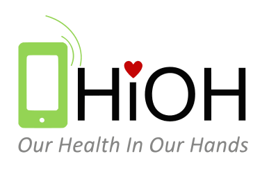

<ion-content class="ion-padding" scroll-y="false" style="background-color: blue;">

  <ion-slides #slider pager="true" [options]="slideOpts">

    <ion-slide>
      
      <h2>Willkommen zu OHIO</h2>
      <p>Du wirst im Folgenden Schritt für Schritt an die App herangeführt<br><b>Wische nach links für den nächsten
          Schritt!</b></p>
      <ion-fab-button color="primary" class="ion-float-right" (click)="slider.slideNext()">
        <ion-icon name="arrow-forward-outline"></ion-icon>
      </ion-fab-button>
    </ion-slide>

    <ion-slide>
      
      <h2>Willkommen</h2>
      <app-language-selector></app-language-selector>
      <p>Die Sprache kann später in den Einstellungen geändert werden.</p>
      <ion-fab-button color="primary" class="ion-float-right" (click)="slider.slideNext()">
        <ion-icon name="arrow-forward-outline"></ion-icon>
      </ion-fab-button>
    </ion-slide>

    <ion-slide>
      <ion-icon name="shield-checkmark" style="padding-top:30px; font-size: 64px;"></ion-icon>
      <h2>Was heißt OHIO?</h2>
      <p>OHIO steht für <b>Our Health In Our Hands</b>. Es ist ein Projekt, dass der Ausbreitung des Coronavirus
        entgegenwirken soll.</p>
      <ion-fab-button color="primary" class="ion-float-right" (click)="slider.slideNext()">
        <ion-icon name="arrow-forward-outline"></ion-icon>
      </ion-fab-button>
    </ion-slide>

    <ion-slide>
      
      <h2>Warum sollte ich OHIO verwenden?</h2>
      <p>Das Ziel der OHIOH-App ist die <b>Ausbreitung von Viren zu bremsen.</b>
        Es liegt der Fokus auf dem Filtern von Infektionsketten in der Bevölkerungunter dem Schutz der persönlichen
        Entscheidung bei User*in über die Art und Umfang der Daten.
        Diese Vorgehen ermöglicht ein frühzeitiges Informieren der Nutzer und damit den Kontakt zu Ärzten*in. Mit den
        bereitgestellten Information können
        Ärzte*in, dieRegierung, Unternehmer*in und die Nutzer*in im Einklang Infektionsketten unterbrechen.</p>
      <ion-fab-button color="primary" class="ion-float-right" (click)="slider.slideNext()">
        <ion-icon name="arrow-forward-outline"></ion-icon>
      </ion-fab-button>
    </ion-slide>

    <ion-slide>
      
      <h2>Wie funktioniert die App?</h2>
      <p>Schauen Sie sich folgendes Erklärvideo an:</p>
      <a href="https://youtube.de">OHIO</a>
      <ion-fab-button color="primary" class="ion-float-right" (click)="slider.slideNext()">
        <ion-icon name="arrow-forward-outline"></ion-icon>
      </ion-fab-button>
    </ion-slide>

    <ion-slide>
      
      <h2>Wie geht es weiter?</h2>
      <p>Im nächsten Schritt können <b>freiwillig</b> Daten eingetragen werden. Sie entscheiden welche Daten Sie zur
        Verfügung stellen.</p>
      <ion-button fill="clear" (click)="onNextClick()">Weiter<ion-icon slot="end" name="arrow-forward"></ion-icon>
      </ion-button>
      
    </ion-slide>

  </ion-slides>

</ion-content>